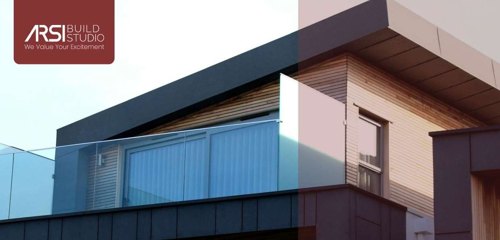

Multi-jasa konstruksi & desain
BANGUN.
RENOVASI.
WUJUDKAN.
Kontraktor, arsitektur, interior, surveyor, hingga pembiayaan syariah — dalam satu tim yang sama, untuk klien di Bandung, Jakarta, Tangerang dan Jawa Barat.
Kontraktor, arsitektur, interior, surveyor, hingga pembiayaan syariah — dalam satu tim yang sama, untuk klien di Bandung, Jakarta, Tangerang dan Jawa Barat.
Berdiri sejak 2022, Arsi Build Studio adalah jasa kontraktor dengan tim yang memiliki pengalaman di bidang konstruksi, arsitektur, dan interior lebih dari 5 tahun. Kami berkomitmen memberikan hasil yang kreatif dan inovatif, serta mewujudkan keinginan dan impian klien.
Di setiap proyek, kami menjaga dinamika kerja tim agar produktivitas terus meningkat — supaya hasil akhir sedekat mungkin dengan rencana dan desain awal yang disepakati bersama klien.
Kenali Kami Lebih JauhLima layanan inti yang dikerjakan oleh satu tim yang sama, di bawah payung Arsi Build Studio & Arsi Studio Interior.
Konstruksi bergaransi dari lahan kosong hingga selesai terbangun, renovasi parsial & total.
Selengkapnya →Desain arsitektur kreatif dan fungsional, disesuaikan klien dan lingkungan sekitar.
Selengkapnya →Desain interior estetik dan nyaman dengan pendekatan personal sesuai fungsi ruang.
Selengkapnya →Survei lahan dan topografi sebagai dasar akurat perencanaan proyek konstruksi.
Selengkapnya →Program pembiayaan konstruksi berbasis syariah, transparan, tanpa riba dan gharar.
Selengkapnya →
James & Jason boleh jadi cerita kontraktor lain — di Arsi Build Studio, setiap proyek kami kerjakan dengan standar yang sama: transparan, kreatif, dan bertanggung jawab sampai serah terima.
Galeri proyek sedang kami susun — sementara ini berikut gambaran jenis pekerjaan yang biasa kami tangani.